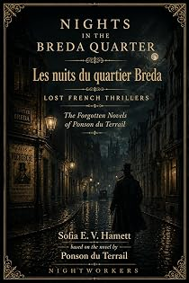

Les Nuits du quartier Bréda
A novel of the Paris demi-monde
by Pierre-Alexis Ponson du Terrail · translated by Sofia E. V. Hamettpar Pierre-Alexis Ponson du Terrail · traduit par Sofia E. V. Hamett
The bookLe livre
Aspasie is giving a ball. Aspasie's name is in fact Marguerite, and before anything else the author proposes to strike a fair balance between the ferocious bourgeois who insists every lorette is a porter's daughter and the naive young dandy who believes they all descend from the Montmorencys through the female line. So he tells you where Marguerite came from. The Paris demi-monde, written from inside it.
Aspasie donne un bal. Aspasie s'appelle en réalité Marguerite, et l'auteur se propose d'abord de tenir la balance égale entre le bourgeois féroce qui soutient que toute lorette est fille de portier et le jeune dandy naïf qui les croit toutes issues des Montmorency par les femmes. Il vous dira donc d'où venait Marguerite. Le demi-monde parisien, écrit du dedans.
From the opening pagesLes premières pages
Aspasie’s Theories
Aspasie was giving a ball.
To tell the plain truth, Aspasie’s name was Marguerite. But before anything else it would be as well to strike a fair balance between the ferocious bourgeois who insists that every lorette is a porter’s daughter, and the naive young dandy who believes they are all descended from the Montmorencys through the female line. So I must tell you where Marguerite came from — Marguerite who called herself Aspasie.
Aspasie was the daughter of a minor civil servant who had worked miracles on eighteen hundred francs a year to bring up a family. He had made a second lieutenant of his son; he wanted his daughter to go into a boarding school. And since Marguerite at seventeen was pretty, quick and cheerful, she threw her bonnet over the windmill — except that the windmill was a good-looking young man’s hat.
The good-looking young man was an actor.
Marguerite went into the theatre. From eighteen to twenty-six her existence was that of every woman who takes up the dramatic career as a means and not as a profession. She had drifted steadily between twelve hundred francs of salary and two thousand, between a sixth-floor flat paid for by a stockbroker and a solid, settled tradesman, between furniture never paid for and forever being seized and the prospect of a bond coupon eternally promised on the eve of a break-up. She had never managed to run up much in the way of debts; she had never loved anybody and never ruined anybody. In the land of love by limited partnership they said of her: “Marguerite’s a chiseller, she does everything small.”
And yet she had wit. On stage she was not bad. She was pretty; she even had adorable fair hair, right on the outer edge of the shade that separates blonde from red. But there was nothing in any of it that was eccentric, loud or showy.
“You’ve no idea what men like,” a pretty forty-three-year-old baby, for whom an adolescent was ruining himself, told her one day.
Add to that fits of fidelity every six months, and a love of family. Because it has to be admitted: fathers who curse their daughters are rare exceptions, and mothers who do not follow them into their new existence merely confirm the rule.
Marguerite’s father had retired; when they turned him out of his ministry with a pension of eight hundred francs they had given him the cross of the Legion of Honour. Marguerite paid his rent, made him shirts and stockings, and gave him dinner three times a week. The old fellow was fond of a good cigar and did not need much pressing to accept one. Sometimes, if Marguerite was short, he brought his quarter’s pension into the house. And when Marguerite wanted to pacify a creditor, she sent her father round — a decorated man always produced his little effect.
So Marguerite had arrived at twenty-six with no really serious position in the world, no savings for the future, and not too much left over in arrears from the past.
They say fortune knocks once in a lifetime at everybody’s door. Marguerite’s hour had not yet struck.
“My dear,” one of her friends said to her one day, “look at me. I’m not young, I’m neither beautiful nor ugly, the wit people credit me with is a mosaic made out of everybody else’s remarks, and I shouldn’t care for anyone to walk into my dressing room too early in the day. Well! I have thirty thousand francs a year, two horses and three servants. Little Baron Benjamin is ruining himself for me and I let him get on with it. At your age I was exactly where you are. You have to make up your mind. You have to launch yourself.”
“I’d like to,” Marguerite answered, “but how?”
“My dear,” the old hetaira went on, “remember that the men of our day ask a woman for everything that isn’t virtue. Be a good sort, thrifty and steady, take up with a boy who’s throwing his fortune away, get his debts paid off for him, live over the stew-pot with him — and you can be quite certain he’ll leave you to marry some plain little thing from the provinces. Ruin him, on the contrary; let him blow his brains out if it comes to that; and the next day declarations will rain on you and you’ll see ten millionaires arrive in single file, armed with bullion.”
“But,” said Marguerite innocently, “to ruin a man he has to have money in the first place. And where do I find that?”
“We’ll find it.”
“Where?” Marguerite asked.
“Baden. We leave tonight.”
“But I haven’t got a sou.”
“I’ll lend you five thousand francs.”
“But I can’t just walk out on Adolphe like that...”
“Go without telling him anything. He’ll console himself as best he can.”
“Ah, but he’s very much in love with me!”
“The essential thing is that you’re not in love with him.”
Following this edifying conversation, Marguerite left for Baden. A week later, one evening, dead drunk on Rhine wine, she broke the bank.
“My dear,” her female Mentor said to her then, “if you have the strength to go back to Paris, take a first floor in the rue de la Chaussée-d’Antin, keep three horses in the stable and refuse everybody’s love pitilessly for six months, your fortune is made.”
It must be said to Marguerite’s credit that if fortune came to her late, she nonetheless gave it a warm welcome and showed herself worthy of her new position. She came back to Paris with a hundred and three thousand francs, paid off her shabby little debts, furnished a splendid apartment, and appeared at the autumn races in a dog-cart with a tandem team that she drove herself. The papers had announced her triumph at Baden; from that moment she was classified.
The abandoned young man, Adolphe, came back and tried to reoccupy the position.
“My darling dog,” Marguerite told him, “when I’m thoroughly established, you’ll come by again and you’ll be the beloved of my heart. But for the moment, be on your way and let’s not do anything stupid.”
That last break with the past accomplished, Marguerite became Aspasie — and on the day Aspasie was giving a ball, she was one of the seven or eight fashionable women who follow the racing at La Marche and Chantilly, attend first nights with three hundred thousand francs’ worth of diamonds at their throats and on their arms, and extend their protection to journalists and men of letters — to the ones, at least, who are willing to be protected.
Aspasie was thirty-six at the time.
Her ball had been a very fine one. Finance and the administration had rubbed elbows there, the press had sent a delegation and the arts had found themselves represented — all of it in the masculine, needless to say. On the other side of the account: the prettiest actresses in Paris, a few celebrities of the turf, a few queens of the amorous half-light. Supper had been at two, and several intrigues had been tied up between the last polka and the pyramid of crayfish. Set against that, there had been two break-ups, one sulk and one blow of a fan, on account of which a young officer and a no less young auditor at the Council of State had promised to cut each other’s throats the following morning.
The excerpt ends here — about 1,254 words of the published edition.L'extrait s'arrête ici — environ 1,254 mots de l’édition parue.
KindlePaperbackBrochéContextContexte
Rocambole made Ponson du Terrail famous and then swallowed the rest of his work. He wrote dozens of other novels — the Second Empire demi-monde, forest melodramas, police memoirs, Regency intrigue, Orientalist serials — and almost none of them survived in English. Lost French Thrillers recovers them, in the order they can be edited, with the same care given to the Rocambole cycle.
Rocambole a rendu Ponson du Terrail célèbre, puis a englouti le reste de son œuvre. Il a écrit des dizaines d'autres romans — le demi-monde du Second Empire, des mélodrames forestiers, des mémoires de police, des intrigues de la Régence, des feuilletons orientalistes — et presque aucun n'a survécu en anglais. Lost French Thrillers les exhume, dans l'ordre où ils peuvent être établis, avec le soin donné au cycle de Rocambole.
The whole programmeTout le programme